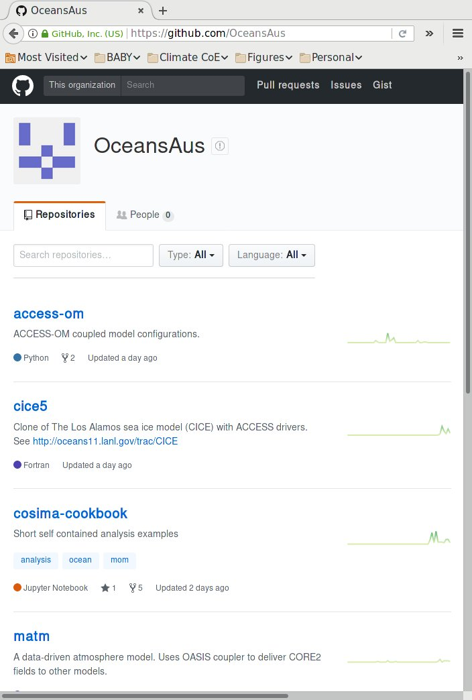
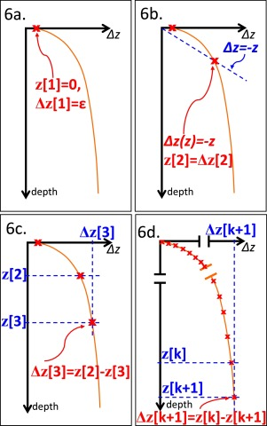

COSIMA Technical Working Group (TWG) Update
Aidan Heerdegen
Australian National University

General goals
- Updates on activities across research centres
- Collaborative support of general technical issues
- Identification of large-scale issues
- Compilation of unresolved and ongoing issues
Members
ANU
- Aidan Heerdegen
Bureu of Meteorology
- Justin Freeman
- Mirko Velic
CSIRO Aspendale
- Peter Dobrohotoff
CSIRO Hobart
- Matt Chamberlain
- Russ Fiedler
Double Precision
- Nicholas Hannah
NCI
- Marshall Ward
Model configurations
- 0.25° and 0.1° configuration hosting
- Common MATM and CICE repos
KDS75 Vertical Grid support
- Vertical grid update
- Topography update
- Scaling verification
- (Clean this up)
JRA-55 support
- 0.5° resolution
- 3 hr sampling
- NCI archival
- MATM support
- MOM support (in progress)
- MOM 5 FMS upgrade, closer integration with MOM 6
- Parallel IO testing